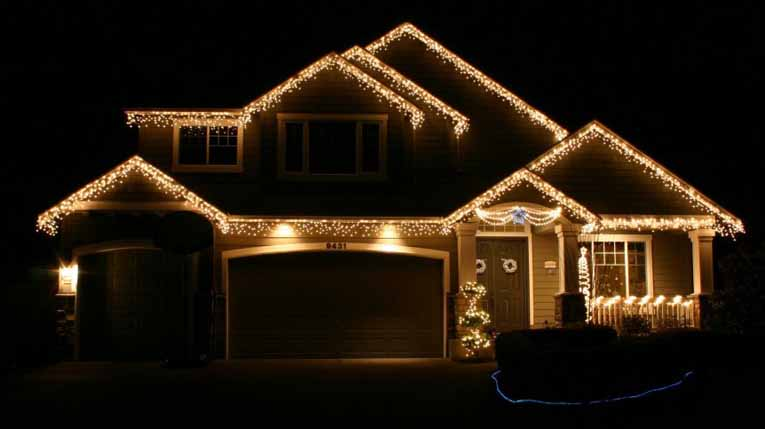

Christmas Lights
December 2006
It's very common in the US to decorate your house at Christmas. Lisa has been dying to do this for years and now we live in a location where it's encouraged, I have found it harder to say no! (Plus to be honest I quite like it too).
So I decided to get some lights up. Now you can hire people to come round your house and do this for you, but as I'm quite cheap I decided to do it myself, I mean how hard can it be?
So I sent Lisa off to Target (her favorite store) and told her to get some lights. She came back with over 2000 lights. So I got out my ladder a hammer and load of nails and climbed up onto the roof to put the lights up.
The first year I did this it took about 5 hours to decorate the house, but once the nails were up, it became much easier on subsequent years. Now I can put the lights up in an hour, and take them down after Christmas is about 45 minutes. I don't even use a ladder! I now climb out of the bonus room window and run around on the roof. Lisa hates this and can't watch - say's it's too scary. But it's the fastest way to do the job.
Anyway I think the pic looks great. This is from 2006 but it looks the same every year.
Hope you like it.
